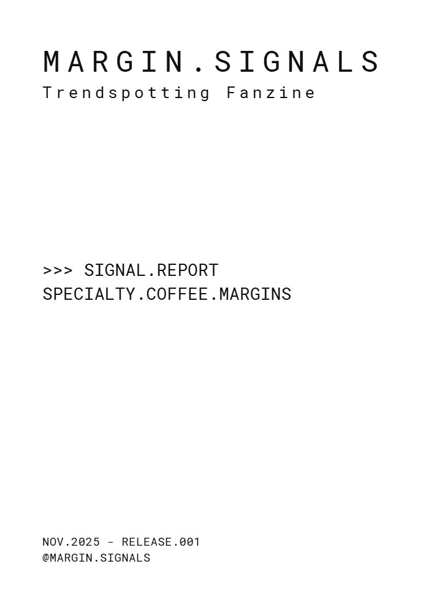
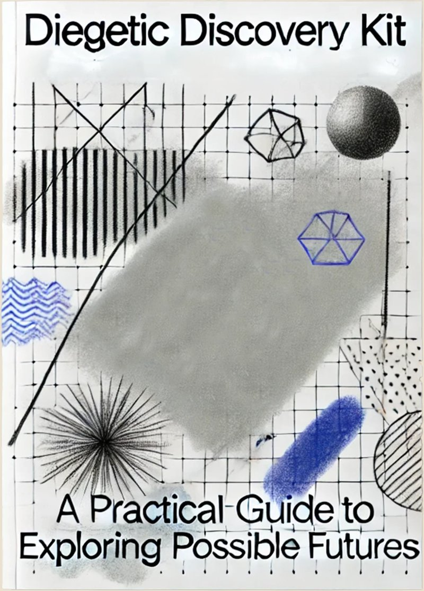

I translate futures research into tangible artifacts through AI-enhanced design fiction. With a background in sociology and UX design, focused on climate and urban futures.
Publisher, MARGIN.SIGNALS editorial. Tracking signals at cultural margins.
Co-founder of Heated Studio, leading climate resilience projects. Managing Partner at BPP Analytics and Design, combining research with futures design for strategic decision-making. I teach and facilitate workshops on AI-enhanced design fiction for design schools and institutions.
Previously collaborated with Near Future Laboratory and Girardin & Nova on design fiction projects for telecommunications, finance, defense, and mobility sectors.
Available for design fiction projects, strategic foresight consulting, and workshop facilitation. Let's explore future scenarios together.
Work
Environmental Crisis
Foresight

- No, the plane doesn't have AI. And that opens up more interesting questions than the ones it tries to answer
- What if the State Designed Futures? A day in Buenos Aires revealed how speculative design, weak signals, and institutional fiction can become fundamental tools for public policy
- Teaching Artificial Intelligence to UX Designers: Notes from a masterclass given together with Fabien Girardin and Rohit Gupta for UX design students at UDIT [ES]
- Turning the Tide: How Argentina Can Transform Short-Term Survival into a Future-Ready Strategy
- Comment réimaginer le futur au quotidian? / Re-imagining everyday futures
- Viveza Criolla: A Design Fiction Lens on Strategic Adaptation
- A practical guide to changing how you see the everyday objects and spaces around you
- Envisioning futures where Design Fiction empowers refugees to rebuild their lives
- Prospective Methodology Based on Futures Design
- How to prepare for and anticipate contingencies by proposing narratives and artifacts through Futures Design
Publishing
MARGIN.SIGNALS

Independent editorial. Tracking signals at cultural margins.
Trendspotting Fanzine / RELEASE.001
SPECIALTY.COFFEE.MARGINS
In production — Launch November 2025
01. Master plant protocols
02. Intentional defect fermentation
03. Decolonizing cupping frameworks
Pattern: hierarchy inversion
FORMAT: A5 zine / Digital + Physical
SPECS: 9 pages, 45 sources
PRICE: €6 digital / €15 physical / €18 both
Projects
Desert Athleisure
Decathlon sportswear for 40°C+. Speculative capsule collection for extreme heat scenarios. Design fiction. Landing page. Heated Studio.
View →Adaptive Museums
Museums as climate refuges. Speculative prototype exploring dynamic pricing models. Design fiction. Video introduction. Heated Studio.
View →CUIDAR.ar
Buenos Aires City eldercare system. Design fiction.
View →Mercado San Telmo
Buenos Aires' historic market. Design fiction. Video introduction.
View →OFFicial
WELCOME for refugees. Design fiction.
View →Also
CV
Experience
Lab de Mundanidad Forzada
Research Coordinator & Lab Initiator
Lead collaborative research experiments exploring forced mundanity through ethnographic methods and design interventions, coordinating ideation processes and experimental design across research teams.
Heated Studio
Co-founder & Design Fiction Lead
Climate futures consultancy. Design fiction + strategic foresight for organizations navigating climate uncertainty.
BPP Analytics and Design
Managing Partner
Strategic consultancy combining sociological research with futures design, applying research and design thinking to support business intelligence and organizational strategy.
Girardin & Nova
Design Researcher
Collaborative design fiction projects for global clients in telecommunications, financial services, and defense sectors. Published explanatory articles detailing design fiction applications in strategic foresight and institutional transformation.
Near Future Laboratory
Design Researcher
Collaborative design fiction projects exploring emerging technologies and societal transformation for mobility sectors.
Teaching
UDIT Madrid
Guest Lecturer, Master's in UX Design
Co-taught three-part masterclass on AI and emerging technologies with Fabien Girardin and Rohit Gupta, focusing on AI-enhanced design fiction and speculative futures. Conducted individual mentoring sessions for graduate thesis projects.
Domus Academy, Milan
Guest Workshop Co-facilitator
Co-led intensive workshop on climate foresight and AI-enhanced weak signals analysis, guiding graduate design students in developing speculative urban futures for extreme heat scenarios.
CESBA, Buenos Aires
Event Organizer & Opening Keynote
Organized public forum on futures design for public policy, presenting institutional proposal for Futures Anticipation Unit to Buenos Aires government. Panel with Fabien Girardin, Miriam Latorre, and Ezequiel Politi.
Education
UDIT Madrid
Master's Degree in User Experience for the Design of Digital Products and Services
Universidad del Salvador
Bachelor's in Sociology
Institute for the Future
Certified in Future Thinking & Forecasting
Core Expertise
Specialized in design fiction and AI-enhanced prototyping for strategic foresight. Research methods include weak signals analysis, scenario planning, and ethnographic approaches. Focus areas: climate adaptation strategies, urban resilience, food futures, and sociological futures research.